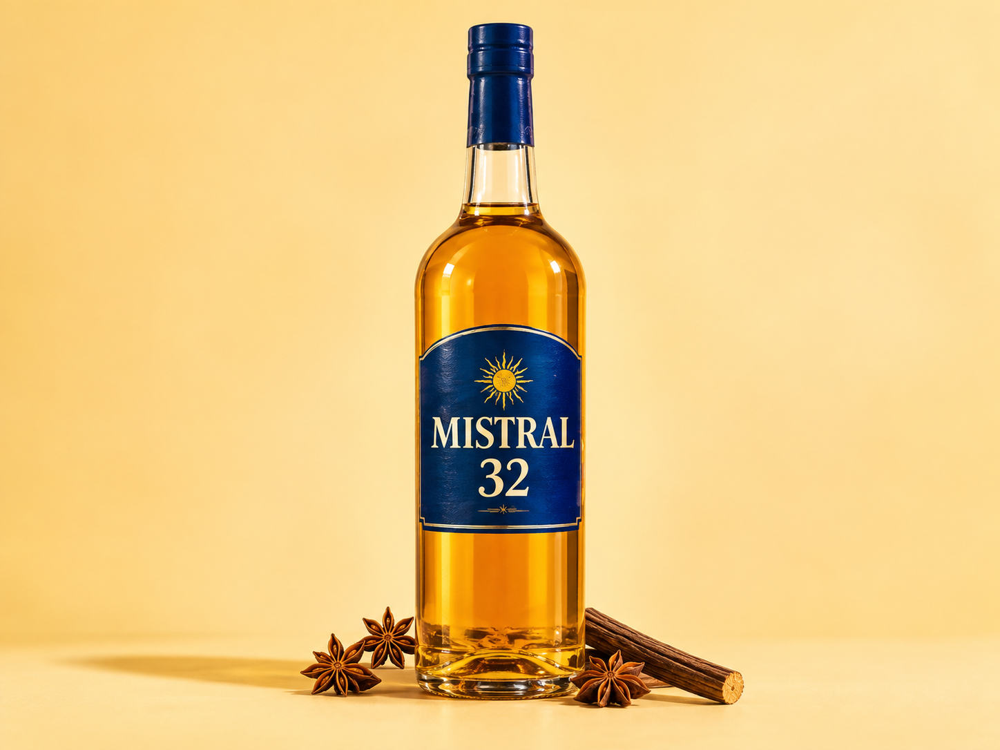
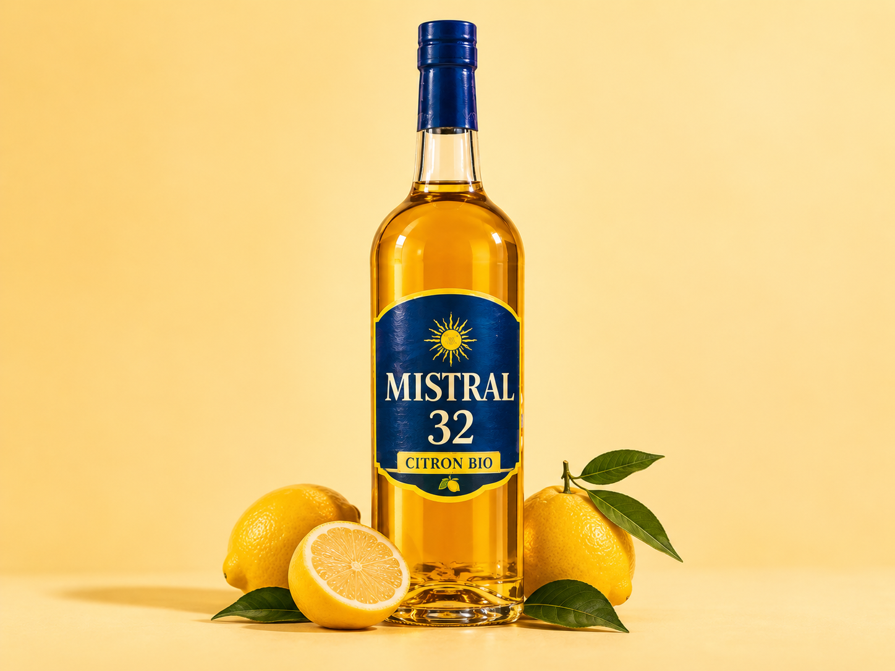
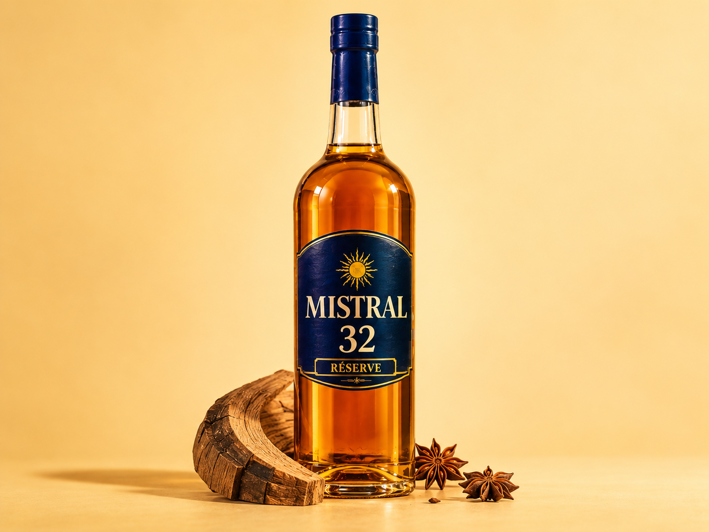

45 % vol.
Mistral 32 Original
La recette signature : anis étoilé, réglisse et herbes de Provence, pour un pastis franc et rafraîchissant.
Découvrir →Pastis artisanal de Provence
Mistral 32 est né en Provence, de 32 plantes et épices : anis étoilé, réglisse et herbes cueillies sous le vent. Un apéritif solaire, à partager entre amis et à savourer avec modération.
Découvrir nos pastis Notre histoire
Une même passion pour l'anis, trois caractères bien différents. Trouvez celui qui vous ressemble.

45 % vol.
La recette signature : anis étoilé, réglisse et herbes de Provence, pour un pastis franc et rafraîchissant.
Découvrir →
40 % vol.
Une version pétillante de fraîcheur, relevée de zestes de citron de Menton issus de l'agriculture biologique.
Découvrir →
45 % vol.
Vieilli six mois en fût de chêne, un pastis rond et boisé pour les amateurs de caractère.
Découvrir →
Dans un verre à pastis bien droit ou un verre ballon.
Une eau bien fraîche révèle tous les arômes de l'anis.
Le pastis se trouble et prend sa belle couleur jaune soleil.
Ajoutés à la fin, ils préservent tout le goût de la recette.
★★★★★
« Un pastis d'une fraîcheur incroyable. On sent vraiment les herbes de Provence. »
Marseille
★★★★★
« La version citron est devenue la star de nos apéros d'été sur la terrasse. »
Aix-en-Provence
★★★★★
« Plus doux que les pastis classiques, avec une vraie longueur en bouche. Une belle découverte. »
Toulon